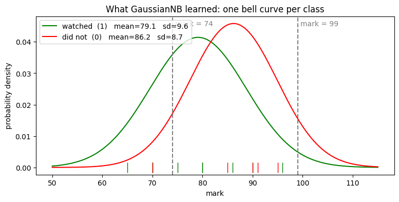
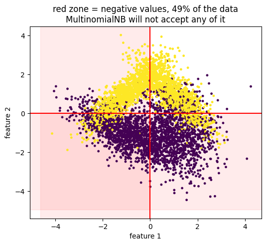
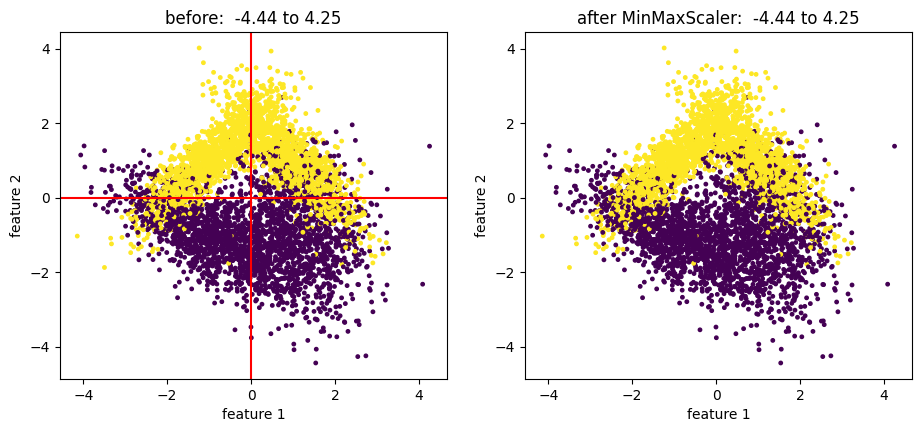

You know what car owners do for a living. You counted it door to door: of the 3 car-owning houses, 1 has a job and 2 run a business.
A new family moves in. You know they have a business. You want their vehicle — the question pointing the other way.
You have P(job | car). You need P(car | job). They are not the same number, and swapping them by accident is one of the oldest mistakes in probability.
Bayes theorem is the exact rule for turning one into the other. "Naive" is the shortcut: assume the columns do not affect each other. It is usually false and works surprisingly well anyway.
🔑 The one idea
Bayes flips a conditional you can count into the one you actually want.
You knock on ten doors in your colony. At every door you note down two things:
is there a job in this house, is there a business in this house - and
what do they park outside, a car or a bike?
10 houses in the colony
┌────────────────────────────────────────────────┐
│ 3 own a CAR 7 own a BIKE │
│ ┌───────────────┐ ┌────────────────┐ │
│ │ job 1 │ │ job 2 │ │
│ │ business 2 │ │ business 5 │ │
│ └───────────────┘ └────────────────┘ │
└────────────────────────────────────────────────┘
A new family moves in. You hear that they have a job and a business, but you
have not seen their vehicle. Car or bike?
Notice what you own: you counted the other way round. You know what car
owners do for a living. The new family gives you their work and asks for the
vehicle. Bayes theorem is the tool that turns your counting around.
Bayes theorem
P(B|A) · P(A)
P(A|B) = ──────────────────
P(B)
P(A|B) reads "the chance of A, given that B has already happened."
In machine-learning letters, x is what you know and y is what you want:
P(x|y) · P(y)
P(y|x) = ──────────────────
P(x)
Why "naive"
Real rows have many columns, not one. Naive Bayes handles that in the
laziest possible way - it takes each column on its own and multiplies:
That multiplication assumes the columns do not affect each other. In real
data they usually do. Pretending they do not is the naive part of the
name, and it is the reason the model is so fast.
Y = the 5me column: 1 = watched the video lessons, 0 = did not.
Y = 1 (watched) 80 70 90 75 70 86 96 80 65 9 students
Y = 0 (did not) 70 90 91 95 85 5 students
The question: a student scored 74. Did they watch the lessons?
One thing to notice before the model starts. The mark is a continuous
number - 74, 74.5, 80.2, anything. You cannot count how many times "74"
happened, because in real marks it may never happen twice. That single fact
decides which Naive Bayes you are allowed to use, and Step 2 shows why.
codecell 2
import matplotlib.pyplot as plt
import numpy as np
import pandas as pd
X = np.array([80,70,90,75,70,86,96,80,65,70,90,91,95,85])
Y = np.array([1,1,1,1,1,1,1,1,1,0,0,0,0,0])
Step 2 - GaussianNB: draw one bell curve per class
X.reshape(-1, 1) turns the flat list of 14 marks into a table of 14 rows and
1 column. sklearn always wants a table of rows, even when there is one column.
-1 means "work the row count out yourself."
A continuous number cannot be counted, but it can be described. For each
group you only need two numbers - where the marks sit, and how spread out they
are:
group mean μ standard deviation σ
─────────────────────────────────────────────────────
Y = 1 (watched) 79.1 10.2
Y = 0 (did not) 86.2 9.7
fit() computes exactly these four numbers and stops. That is the whole
training. It then places a bell curve on each group using the Gaussian
formula from your notes:
Feed the formula any mark and it returns how normal that mark is for this
group. That is the P(x|y) piece of Bayes theorem, now available for numbers
that were never in the training data.
Small honest note: your notes use σ = 10.2 and 9.7 (dividing by n-1). sklearn
divides by n and stores 9.6 and 8.7. Slightly different numbers, same
conclusion everywhere below.
codecell 4
x = X.reshape(-1,1)
from sklearn.naive_bayes import GaussianNB
classifier = GaussianNB()
classifier.fit(x,Y)
74 is close to the watchers' average of 79.1 and far below 86.2, so the first
curve is higher. Bayes then multiplies each one by how common the group is:
watched : 0.034 × 9/14 = 0.023 ★ winner
did not : 0.018 × 5/14 = 0.006
classifier.predict([[74]]) returns array([1]) - watched the lessons.
The double brackets are the same rule as reshape: predict expects a table of
rows, so one student is still a table with one row.
codecell 6
classifier.predict([[74]])
Output
array([1])
Step 4 - Now a student scored 99
Nothing about the model changed. Only the mark moved.
array([0]) - did not watch. 99 sits far to the right of both averages,
but the non-watchers' curve is the one still alive out there.
Same model, same maths, opposite answer. Somewhere between 74 and 99 the two
curves cross, and that crossing point is the entire decision boundary. The
next cell draws it.
codecell 8
classifier.predict([[99]])
Output
array([0])
See it
The picture below is drawn from the model you just trained - classifier.theta_
holds the two means, classifier.var_ the two variances. The small ticks along
the bottom are the 14 real students.
codecell 10
# the two bell curves GaussianNB learned from the 14 students
mu = classifier.theta_.ravel() # mean of each class
sd = np.sqrt(classifier.var_.ravel()) # standard deviation of each class
grid = np.linspace(50, 115, 400)
plt.figure(figsize=(9, 4))
for label, colour, name in [(1, 'green', 'watched (1)'), (0, 'red', 'did not (0)')]:
i = list(classifier.classes_).index(label)
bell = 1 / np.sqrt(2 * np.pi * sd[i] ** 2) * np.exp(-(grid - mu[i]) ** 2 / (2 * sd[i] ** 2))
plt.plot(grid, bell, color=colour, label=f"{name} mean={mu[i]:.1f} sd={sd[i]:.1f}")
plt.plot(X[Y == label], np.zeros((Y == label).sum()), '|', color=colour, markersize=14)
for mark in [74, 99]:
plt.axvline(mark, color='gray', linestyle='--')
plt.text(mark + 0.5, 0.045, f"mark = {mark}", color='gray')
plt.title("What GaussianNB learned: one bell curve per class")
plt.xlabel("mark")
plt.ylabel("probability density")
plt.legend()
plt.show()

Output from this notebook.
Step 5 - A real dataset: iris
One column was the easy case. Iris gives you four:
column
what it is
sepal length (cm)
a measurement
sepal width (cm)
a measurement
petal length (cm)
a measurement
petal width (cm)
a measurement
target
0, 1 or 2 - the flower species
All four are continuous centimetres, and there are three classes instead of
two. This is where the naive assumption starts working for its living:
petal length and petal width clearly move together in a real flower, and the
model is about to pretend they do not.
load_iris() returns a bunch object, not a table, so pd.DataFrame(iris.data, columns=iris.feature_names) builds the table and the next cell glues the
answer column on.
table.drop(['target'], axis='columns') gives back a copy without the answer
column. axis='columns' is what tells drop to remove a column and not a row.
codecell 15
x = table.drop(['target'], axis='columns')
y = iris.target
Step 7 - Hide 20% of the flowers
train_test_split(x, y, test_size=0.20, random_state=0) keeps 120 flowers for
training and locks 30 away for the exam.
random_state=0 fixes which 30 are hidden. Change that number and you get a
different 30, and a slightly different score. Keep this in mind - it comes back
at the end of the notebook.
codecell 17
from sklearn.model_selection import train_test_split
X_train, X_test, y_train, y_test = train_test_split(x, y, test_size = 0.20, random_state = 0)
Step 8 - Train
Same one-line fit as before, only bigger. GaussianNB now measures a mean and
a standard deviation for every column inside every class:
sepal len sepal wid petal len petal wid
class 0 μ, σ μ, σ μ, σ μ, σ
class 1 μ, σ μ, σ μ, σ μ, σ
class 2 μ, σ μ, σ μ, σ μ, σ
Twelve bell curves, plus three priors - how common each species was in the
training rows. That is the whole model. No loops, no gradient descent, one
pass over the data.
codecell 19
from sklearn.naive_bayes import GaussianNB
classifier1 = GaussianNB()
classifier1.fit(X_train, y_train)
Output
GaussianNB()
Step 9 - Read the report card
For one test flower the model runs all twelve curves, multiplies the four
values inside each class by that class's prior, and keeps the biggest of the
three totals.
MultinomialNB was built for counts. Its natural home is text: this email
contains "free" 3 times, "offer" 1 time, "invoice" 0 times. It asks
"how many times did this thing happen?"
Iris does not answer that question. 5.1 is not "sepal length happened 5.1
times" - it is a length. But nothing stops you from calling fit, so the model
quietly reads your centimetres as counts and trains anyway.
codecell 24
from sklearn.naive_bayes import MultinomialNB
classifier2 = MultinomialNB()
classifier2.fit(X_train, y_train)
Output
MultinomialNB()
codecell 25
classifier2.score(X_test,y_test)
Output
0.5666666666666667
0.567. Seventeen flowers out of thirty.
It is not random - random over three classes would be near 0.33. Big petals do
produce big "counts", so some signal survives. But everything Gaussian used -
the average of each class, the spread around it - is thrown away. That is
0.967 down to 0.567 with the same data, the same split and the same one line
of code.
The model did not break. It was handed the wrong shape of number.
Step 11 - The second failure: BernoulliNB
BernoulliNB expects yes/no columns - 1 or 0. Did the word appear at all?
Did the customer click or not?
To get there it first flattens every value with a threshold called binarize,
and the default threshold is 0.0: anything above 0 becomes 1, the rest 0.
Now look at what that does to iris, where the smallest value in the whole
table is 0.1:
Every flower becomes the same row. The model has nothing left to tell them
apart, so it falls back on the biggest group in the training data - class 2,
44 rows of it - and answers 2 for all thirty test flowers.
Six of those thirty really are class 2. 6/30 = 0.2. The score is not a bug,
it is arithmetic.
codecell 28
from sklearn.naive_bayes import BernoulliNB
classifier3 = BernoulliNB()
classifier3.fit(X_train, y_train)
Output
BernoulliNB()
codecell 29
classifier3.score(X_test,y_test)
Output
0.2
Step 12 - Change the data, not the model
Iris punished the wrong model. Now build data that punishes the unprepared
data, using make_classification - 5000 rows, 2 columns, 2 classes.
Two things about this data matter for the rest of the notebook:
the values are spread around zero, so roughly half of them are negative;
there is no random_state, so every run makes a fresh dataset. Your
scores will move by a few points each time you run these cells. The story
does not change.
This time there is no quiet wrong answer. There is a wall:
ValueError: Negative values in data passed to MultinomialNB (input X).
Your handwritten note says it in six words: if there are -ve values, then
there is an error.
And it is fair. MultinomialNB counts things. A count of -1.2 does not exist -
no word appears minus one point two times. Around half the values in this
dataset are negative, so sklearn stops instead of pretending.
This is the friendliest failure in the notebook. The 0.567 on iris was silent;
this one tells you exactly what is wrong.
Everything in the red zone is a value MultinomialNB will not accept. The cell
also keeps a copy of the raw data as x_before, so we can compare after the
fix.
codecell 45
x_before = x.copy() # keep the raw data, Step 15 compares against it
plt.figure(figsize=(6, 5))
plt.axvspan(x[:, 0].min() - 0.5, 0, color='red', alpha=0.08)
plt.axhspan(x[:, 1].min() - 0.5, 0, color='red', alpha=0.08)
plt.scatter(x[:, 0], x[:, 1], c=y, s=6)
plt.axvline(0, color='red')
plt.axhline(0, color='red')
plt.title("red zone = negative values, %.0f%% of the data\nMultinomialNB will not accept any of it"
% (100 * (x < 0).mean()))
plt.xlabel("feature 1")
plt.ylabel("feature 2")
plt.show()

Output from this notebook.
Step 15 - Pre-processing: give the model numbers it can accept
MinMaxScaler squeezes every column into the range 0 to 1:
x - min
x_scaled = ─────────────
max - min
The smallest value in a column becomes 0, the largest becomes 1, and everything
else lands in between in the same order. No point overtakes another, no
cloud changes shape - only the ruler changes.
before -4.0 ──────────── 0 ──────────── +4.0
▲ negatives ▲
after 0.0 ─────────────────────────── 1.0
no negatives left
fit_transform does two jobs: fit finds the min and max of each column,
transform applies the formula. And that is the whole repair.
codecell 47
from sklearn.preprocessing import MinMaxScaler
codecell 48
scalar = MinMaxScaler()
x = scalar.fit_transform(x)
Before and after
Same 5000 points, twice. Only the numbers on the axes moved.
codecell 50
fig, ax = plt.subplots(1, 2, figsize=(11, 4.5))
ax[0].scatter(x_before[:, 0], x_before[:, 1], c=y, s=6)
ax[0].axvline(0, color='red')
ax[0].axhline(0, color='red')
ax[0].set_title("before: %.2f to %.2f" % (x_before.min(), x_before.max()))
ax[1].scatter(x[:, 0], x[:, 1], c=y, s=6)
ax[1].set_title("after MinMaxScaler: %.2f to %.2f" % (x.min(), x.max()))
for a in ax:
a.set_xlabel("feature 1")
a.set_ylabel("feature 2")
plt.show()

Output from this notebook.
Step 16 - Split again
The split has to be redone, because x is a different array now. Splitting
before scaling and then scaling both halves separately would leak information
from the test set into training - the reason 03_preprocessing.ipynb
keeps hammering on Pipeline.
codecell 52
from sklearn.model_selection import train_test_split
X_train, X_test, y_train, y_test = train_test_split(x, y, test_size = 0.20, random_state = 0)
codecell 53
classifier2 = MultinomialNB()
Step 17 - The same model, now it runs
No error. MultinomialNB fits, and scores 0.752.
That is the point of the whole notebook, in two cells:
raw data → ValueError, no model at all
MinMaxScaler → 0.752
Now read the number honestly. 0.752 is below the 0.856 that Bernoulli got on
this same data. Pre-processing removed the crash, it did not make
MultinomialNB the right model - these are still continuous measurements, not
counts, and your own handwritten rule says continuous data belongs to
GaussianNB.
Pre-processing gets your data through the door. Choosing the model is a
separate job.
---------------------------------------------------------------------------
AttributeError Traceback (most recent call last)
Cell In[65], line 1
----> 1 classifier2.score(X_test, y_test)
File ~/Documents/MACHINE_LEARNING/pizza_env/lib/python3.14/site-packages/sklearn/base.py:628, in ClassifierMixin.score(self, X, y, sample_weight)
603 """
604 Return :ref:`accuracy <accuracy_score>` on provided data and labels.
605
(...) 624 Mean accuracy of ``self.predict(X)`` w.r.t. `y`.
625 """
626 from sklearn.metrics import accuracy_score
--> 628 return accuracy_score(y, self.predict(X), sample_weight=sample_weight)
Which Naive Bayes do I pick?
Straight from your handwritten page:
is the feature a continuous number?
│
┌────── yes ───────┴────── no ───────┐
▼ ▼
GaussianNB is it a count or a frequency?
bell curve per class │
iris: 0.967 ┌──── yes ────┴──── no (0/1) ────┐
▼ ▼
MultinomialNB BernoulliNB
no negative values allowed cuts at `binarize=`
scale them first default cut is 0.0
Can we increase the model's accuracy?
Your notes list four levers. Every one of them already happened in this
notebook:
#
Lever
What it did here
1
Pre-processing
MinMaxScaler turned a ValueError into 0.752
2
Random state / split
no seed on make_classification, so the score moves every run
3
Algorithm selection
same iris data: 0.967, 0.567, 0.2
4
Hyperparameter tuning
binarize 0.0 → 0.2, binarize 0.5 → 0.856
And the line under lever 1 in your notes is the summary of the entire notebook:
data algorithm result
──────────────────────────────────────
wrong wrong wrong
wrong correct wrong
correct correct proper
Correct data alone is not enough. Correct algorithm alone is not enough. You
need both, and this notebook failed once in each way before getting both right.
If you remember only one thing: Naive Bayes scores every class with
P(x|y) × P(y) and returns the winner - the maths never fails. What fails is
handing a model a shape of number it was not built for: centimetres to a
counter, positives-only to negative data, a threshold in the wrong place.
✍️ Handwritten notes
The pages written by hand while working through this topic — the version that came before the tidy write-up. Click any page to enlarge.